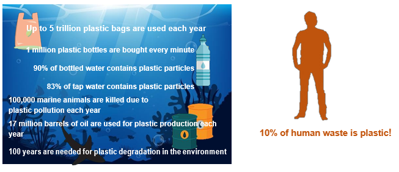
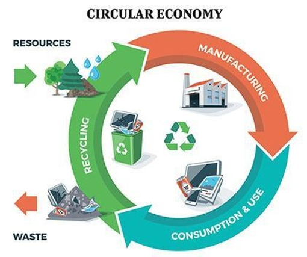

Bags, water bottles, packaging, keyboard... Plastic is everywhere and does not escape any area. Preferred material of manufacturers, its success is explained by its properties.
Lightweight, resistant, malleable and cheap, plastic has properties that have quickly attracted manufacturers. An undeniable success but with its disadvantages and collateral damage.
Even if plastic is present in everyday objects, it is unfortunately found everywhere in nature. The ocean rejects millions of tons of plastic waste on the beaches of the whole world, signs of a kind of indigestion in the nature.
It is also an extremely persistent pollution, some plastics may take more than a thousand years to degrade completely.
Plastic is a subject that today focuses on many environmental issues, related on the one hand to the consumption of resources that it requires for its manufacture and on the other hand to the production of waste that it causes because of its short life.
Pollution by plastics around the world in figures:
The topic of plastic has been in the forefront of the environmental news scene for a few years: growing awareness on the part of citizens about the problems related to plastics, international commitments and binding national regulations, in particular to reduce the use of plastic.
The regulation sets new recycling ambitions, both for Brussels (new circular economy package by 2030) and for Paris, the government has set a target of 100% recycled plastics by 2025 (Bonus-Malus System).
However, the Circular Economy Roadmap published by the French Government in April contains very few measures to tackle the two main issues in this area, namely the recyclability of plastic and its overconsumption.
The Circular Economy Roadmap simply provides:
- France's support for the European ban on fragmented plastics and expanded polystyrene containers (EPS: Packaging, cups for hot drinks).
- The possibility for local authorities to experiment with joint deposit orders for plastic bottles, without precisely knowing for the moment the financing methods and the scale of the device, which will only concern single-use packaging
- Installation by 2020 of plastic particle recovery filters at plastic production sites
- The possibility for companies to make a voluntary commitment to reincorporate recycled plastic in their production, as much as possible.
Therefore, we will support our diagnostic basing on the example of Renault and how Information Systems can add value to the circular economy. There are multiple reasons why we chose Renault as an example. Indeed, in the sector of automobile, the part of plastic is rising, and in addition Renault is a French leader and a pioneer of circular economy. Finally, its global politics and efforts made on green business are ambitious.
Circular economy model is based on a systemic vision inspired by the observation of nature. Nature does not produce waste: everything is reused, composted and digested.
Circular economy reduces the use of raw materials and contributes to the preservation of limited natural resources, an economic model that enables Renault to meet economic and ecological challenges.
Behind every car produced is a ton of special waste: catalytic pots, used batteries and tires, plastic bumpers, dirty solvents, account for most of the waste generated by the use of the automobile. It is possible to reduce the amount of waste produced or its toxicity.
Renault has set up a network for collecting after-sales waste in a pilot region: most of the collected waste can be recycled or reclaimed through recovery channels.
Recycled plastic costs about 10% less than virgin plastic. Enough to give Renault the strength to continue: pioneer and leader in Circular Economy.
Manufactured products - too - can be manufactured at the lowest energy cost and reintegrated into the production process, through their repair, reuse, or re-fabrication.
Renault promotes the replacement of raw materials, derived from natural resources, by "secondary" materials derived from recycling.
These results were obtained either by a more rigorous management of raw material flows or by the implementation of clean technologies where the information system can be an added value by collecting data.
These information systems manage and connect the data of the vehicle components from their eco-design of their production to their valuation. The IS allows to detect errors earlier in the planning phase.
For manufacturing companies, it would be very interesting and effective to be able to control the life cycle of products and, thus, to include the stakeholders of the economic circular for the design of future products. For more than twenty years, Renault has been using Suez to manage its industrial waste.
Rather than pay an eco-organism without any hope of profit, the majority of car manufacturers prefer to control the recycling of cars at the end of their life. They could be integrated into a database for the design of future products. With the northern company Boone, they have gone one step further by joining forces in the recovery and resale of metals from end-of-life vehicles (ELVs).
Taking the example of Renault, we will ask the following question to the CSR (corporate social responsibility) and IS Manager.